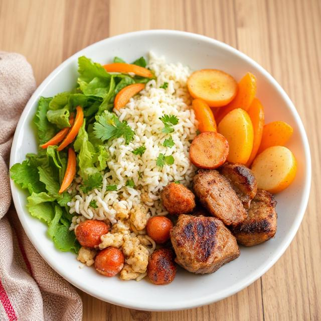

Our Mission
At Budget Bites, our goal is to make affordable, healthy cooking accessible to everyone. We believe that nutritious meals don’t need to be expensive or time-consuming. Whether you’re a student, a busy young professional, or part of a growing family, we’re here to help you cook smart, save money, and eat well.

Who We Serve
- Students — living on tight budgets and in need of quick, affordable meal options.
- Young Professionals — balancing work and life, looking to meal prep efficiently for the week.
- Families — seeking cost-effective, time-saving recipes that everyone can enjoy.
Meet the Team
- Ruqayya Naqvi – Focused on layout consistency, user experience, and overall site structure
- Muhammed Ahmed – Contributed to recipe organization and visual presentation of content
- Justin Gamez – Worked on interactive features and helped structure dynamic content areas
- Brianna Nguyen – Developed resourceful and informative sections, enhancing user engagement